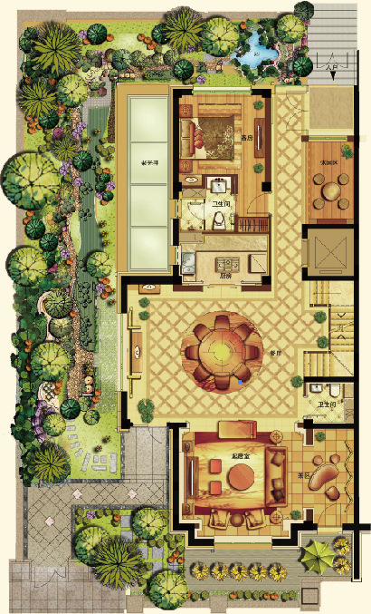

450平米 大观别墅
五室四厅五卫 【双拼产品】

首层 公共礼仪空间
私家庭院，三向入户
首层配置三面花园，五重园林打造与四水归堂风水格局天然一体，三向门厅入户，与室外即时互动，让生活亲近自然；
三重客厅
第一重：餐厅。超高挑空6.5米会客餐厅，南向大面积窗户采光，彰显恢弘大气，连接餐宴大厅形成完整的功能空间，契合中国家族论道宴宾之豪华；
第二重：客人套房。正对项目核心庭院，全明落地窗设计；
第三重：起居室。联通餐厅及客房设计，空间衔接满足生活动线需求；
私家电梯
独立私家电梯，配带玄关电梯厅。